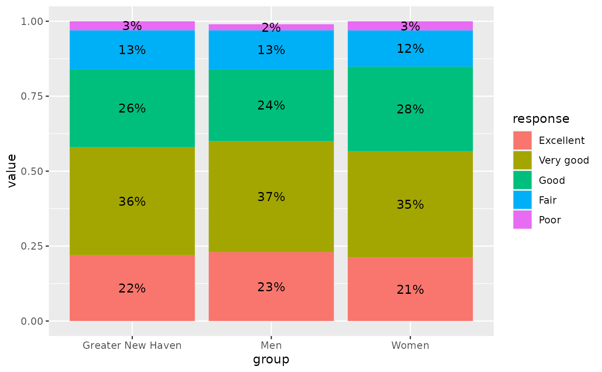
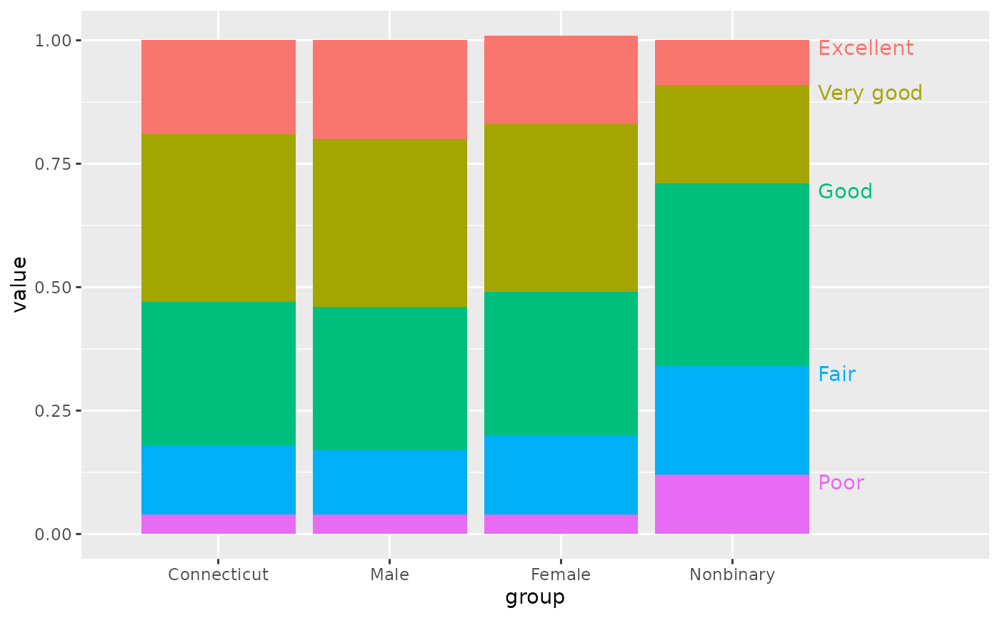
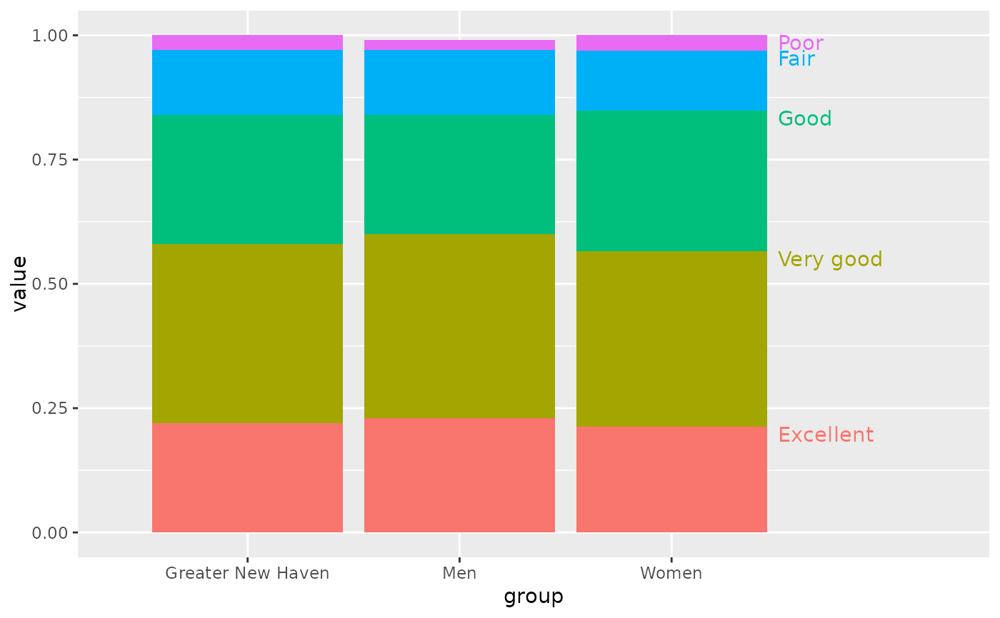

This is a small utility function, intended to calculate the
position of labels for stacked bar charts. Usually with ggplot,
position_stack or position_fill will suffice, but sometimes you need to
do these calculations manually for more specific label placement. Most common
is for labels to be placed in the middle of each segment, but the just
option allows labels to be aligned at some ratio along the length of each
segment.
Note that this function is only concerned with numeric values. You likely
want to arrange and / or group data before passing values to stack_lbls.
Arguments
- x
Numeric vector to stack
- just
Numeric value representing the ratio at which to place labels, comparable to hjust and vjust arguments in plotting functions. You'll often want a single value, though setting each segment's justification can also be useful. Logically values should be between 0 and 1, but nothing's stopping you from using values outside that range. Defaults 0.5 for centered values.
- fill
Logical: should stacked values be rescaled to the range 0 to 1? Defaults
FALSE, returning values on the same scale as those supplied.
Value
A vector of stacked values the same length as x. If the length of
x isn't a multiple of the length of just, you'll get warnings.
Examples
library(dplyr)
#>
#> Attaching package: ‘dplyr’
#> The following objects are masked from ‘package:stats’:
#>
#> filter, lag
#> The following objects are masked from ‘package:base’:
#>
#> intersect, setdiff, setequal, union
library(ggplot2)
df <- self_rated_health |>
filter(category %in% c("Greater New Haven", "Gender")) |>
group_by(group)
# place labels at centers of bars--should be the same as just using position_stack
df_center <- df |>
mutate(centered = stack_lbls(value))
ggplot(df_center, aes(x = group, y = value, fill = response)) +
geom_col(position = position_stack(reverse = TRUE)) +
geom_text(aes(label = percent100(value), y = centered))

# offset very small values for the top bar
df_offset <- df_center |>
mutate(offset = ifelse(response == last(response) & value < 0.03, 1.01, centered))
ggplot(df_offset, aes(x = group, y = value, fill = response)) +
geom_col(position = position_stack(reverse = TRUE)) +
geom_text(aes(label = percent100(value), y = offset))

# replace the legend with direct labels along the last stack of bars
df_top <- df |>
mutate(top = stack_lbls(value, just = 1)) |>
ungroup()
ggplot(df_top, aes(x = group, y = value, fill = response)) +
geom_col(position = position_stack(reverse = TRUE)) +
geom_text(aes(label = response, color = response, y = top),
data = . %>% slice_max(group),
hjust = 0, vjust = 1, nudge_x = 0.5) +
scale_x_discrete(expand = expansion(add = c(0.8, 1.5))) +
theme(legend.position = "none")
